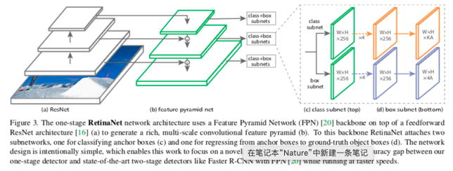

RetinaFace¶
RetinaFace是基于RetinaNet对Face场景下的一个优化, 所以先介绍RetinaNet对Face
RetinaNet¶
重点
Focal Loss
在One-stage检测模型训练时, 背景框的占大多数, 且大部分的背景框都相对简单(易被识别), 这类型的框容易主导Loss的值, 为了解决训练时前背景样本不均衡的问题, 需要对原Cross Entropy Loss进行加权, 如下:
\[\begin{split}p_t = \begin{cases} p &\text{if } y=1 \\ 1-p &\text{otherwise} . \end{cases}\end{split}\]\[FL(p_t) = -(1-p_t)^\gamma log(p_t)\]其中, $\gamma$是超参数, 当$\gamma = 0$时, FL等价于CE; 当$\gamma$增大时, FL对于Easy样本的权重会变小;因子$\alpha_t$是正负样本的共同调节因子, 降低$\alpha_t$可以防止简单稀有类被完全忽略
\[FL(p_t) = -\alpha_t(1-p_t)^\gamma log(p_t)\]
FPN加入至网络中 
backbone(ResNet+FPN): 用于提取卷积特征;
class subnet: 用于对Boxes中的类别进行分类;
box subnet: 用于把Anchor Boxes回归至Group True Boxes;
Anchors机制
对于和GT的IoU大于0.5的Anchors, 指派为前景样本;
对于和GT的IoU介于0.4~0.5的Anchors, 在训练时直接省略, 不参与训练;
对于和GT的IoU小于0.4的Anchors, 指派为背景样本;
每个参与训练的Anchor最多只有一个对应的GT类别;
对于背景样本的Anchor不进行回归;
对于前景样本, 回归anchor和GT之间的相对offset(4维度的向量);
对于分类, 前景样本的预测是一个sigmoid的输出, 预测是否属于这个类, 后接Focal Loss解决不均衡问题, 背景样本不属于任何类;
Ref:
https://arxiv.org/abs/1708.02002